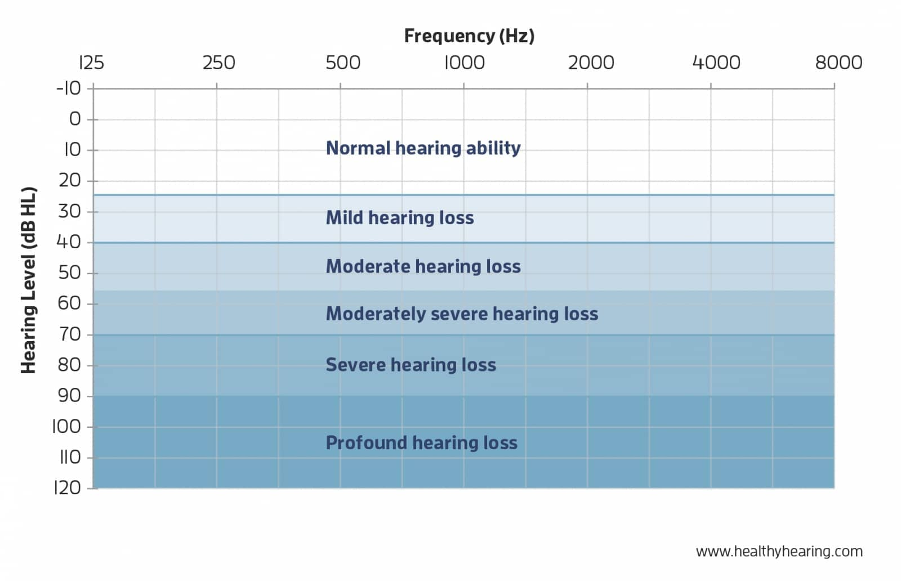
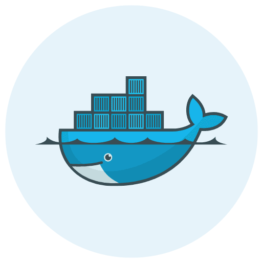
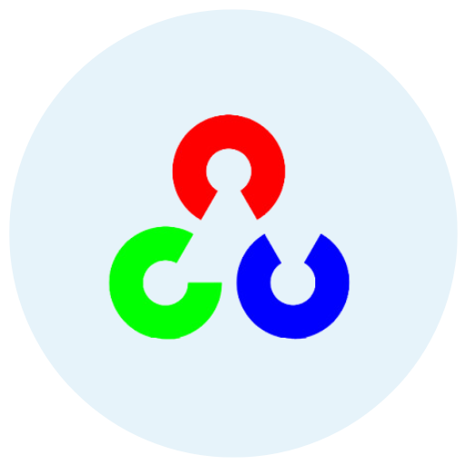

Literature Survey

Hearing Loss in Children
According to the WHO, approximately 466 million people worldwide
have disabling hearing loss, which represents about 6.1% of the
world population. [1] Among those people, most of the people
with hearing impairments can hear after getting an implant or
after starting to use a hearing aid. But those people still tend
to use sign language for communication because they do not have
an improved vocabulary. Vocabulary development is mostly
affected in between the age of 3 to 6 years. [2] Which is why a
customized tool for hearing impaired people who are recovering
is needed.
The aim of this research is to develop a learning tool to provide the ability to use visual based materials from the surrounding environment to improve vocabulary in early ages. CEHIC worked in collaboration with us the entire period of the research and the tool is developed under their supervision. Furthermore, this tool has four main areas of development. It will initially discover the level of the student each day when they try to use the application. Then the student can explore what’s around the child through the camera, which enables seamless and effective learning experience for the child to interact with his surrounding environment and learn based on them, after that it generate meaningful sentences and phrases from the objects that observed previously and the words they have learnt. Finally, lip reading training which basically involves with training lip movements for the alphabet and that gives visual feedback while monitoring the mouth movements of the child.
The aim of this research is to develop a learning tool to provide the ability to use visual based materials from the surrounding environment to improve vocabulary in early ages. CEHIC worked in collaboration with us the entire period of the research and the tool is developed under their supervision. Furthermore, this tool has four main areas of development. It will initially discover the level of the student each day when they try to use the application. Then the student can explore what’s around the child through the camera, which enables seamless and effective learning experience for the child to interact with his surrounding environment and learn based on them, after that it generate meaningful sentences and phrases from the objects that observed previously and the words they have learnt. Finally, lip reading training which basically involves with training lip movements for the alphabet and that gives visual feedback while monitoring the mouth movements of the child.
References
- World Health Organization, “Deafness and Hearing Loss”, Available: https://www.who.int/news-room/fact-sheets/detail/deafness-and-hearing-loss
- Doaa Shawky and Ashraf Badawi, “A reinforcement Learning-Based Adaptive Learning System”, Center for learning technologies, University of Science and Technology, Zewali City, Giza, Egypt.
- Christine Yoshinaga-Itano, Allison L. Sedey , Craig A. Mason, Mallene Wiggin, Winnie Chung, “Early Intervention, Parent Talk, and Pragmatic Language in Children with Hearing Loss”, 01 November, 2020
Research Objectives
Following are the main research objectives achieved in the research.
Initial Status Determination and Progress Monitoring
The first objective is to detect the level of the child when
they start to use the application using a pre trained model
developed using Random Forest Algorithm and a dataset gathered
from hearing impaired children and then measuring the progress
of the child each time they visit the application
The second objective of this study is exploring objects in the
surrounding environment and teach the student in order to
develop their vocabulary
Object Exploration in Surrounding Environment
Contextually Similar Word Generation and Content Filteration
The third objective is to introduce new words to the child based
on other words they learn in the application in order to enhance
their vocabulary
The fourth objective is to detect the accuracy of the
pronounciation of the child using lip movement detection and
voice detection
Lips+voice assisted speech
therapy mechanism
therapy mechanism
Methodology

The proposed application solution has 4 main components. They are:
- Initial Status Determination and Progress Monitoring
- Object Exploration in Surrounding Environment
- Contextually Similar Word Generation and Content Filteration
- Lips+voice assisted speech therapy mechanism
Python
React Native
Unity
Tensorflow

MongoDB
Azure

Docker

Colab

Streamlit

OpenCV
Presentations
Documents
Our Team


Prof. Janaka Wijeekoon
Supervisor
Mr. Jagath Wickramaratne
Cover-up Supervisor
Mr. Samitha Vidhanaarachchi
Co-Supervisor
Rev. Sr. Greta Nalawatta
Foundress at CEHIC
B W E K Senarathna
Data Science
L L P S M Lelkada
Data Science
M M S Udbhasa
Data Science
P D M K Priyanka
Software Engineering